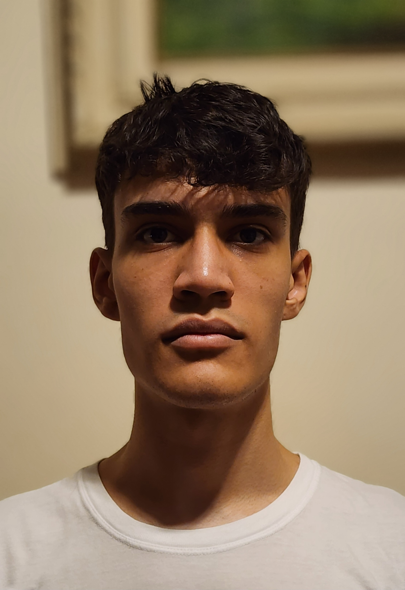

Backend developer at Empathy.
Graduated Computer Science Bachelor @ Universidade Anhembi Morumbi (2019-2022)
👉 docksdevbr@gmail.com
08/2022 – Present
Developed the software and hardware interactions for a robot project, used Raspberry Pi for the hardware and mainly Python for the software.
Made a website platform for the robot project with the NextJS Framework, integrated the usage of Google Credentials, in this project it was used MongoDB as a database.
Built an API for the communication of the robot and the platform. Used Fastify for the API, Zod for the schemas validation and Prisma for the database management, Docker was used to create and store a PostgreSQL database.
04/2022 - 07/2022
Designed and developed the migration of COBOL programs to WEB
Created reports which were used with the programs: